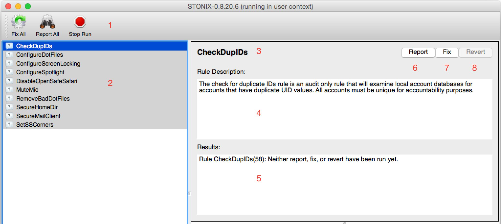
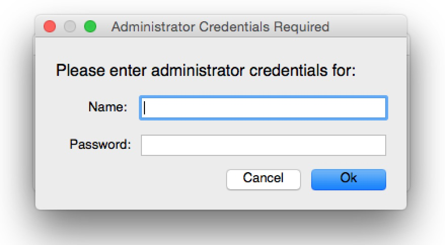
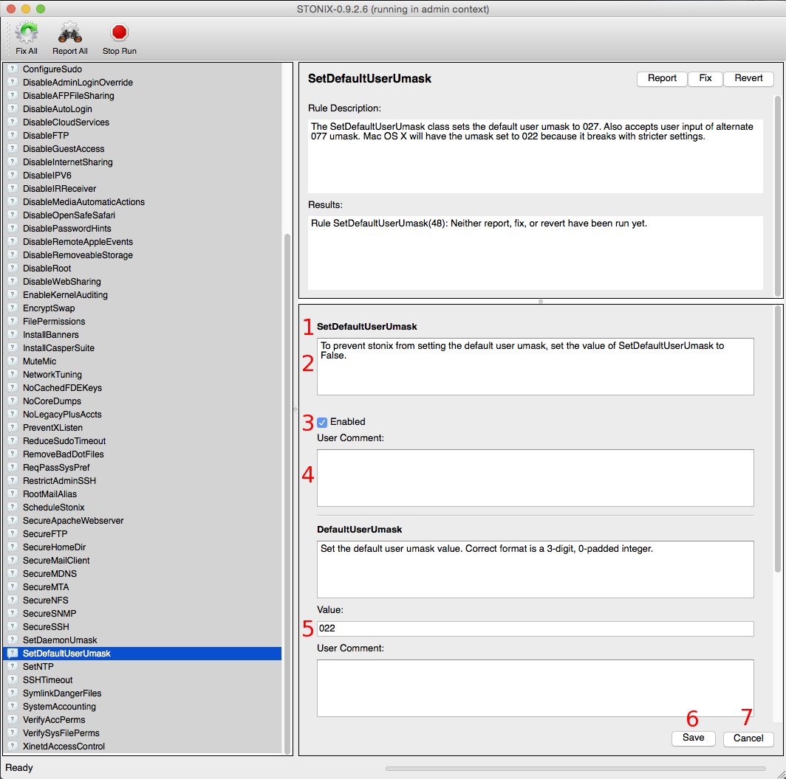

| STONIX User Guide | ||
|---|---|---|
| Previous | Table of Contents | Next |
Graphical User Interface
When run from the command line without any options or opened via stonix4mac.app, STONIX will bring up its graphical user interface (GUI).User Mode
User mode is run when STONIX is opened by an unprivileged (i.e. non-root/admin) user. Due to the inability to change most system settings, there are far fewer rules that will run in User Mode. However, these rules are still important, and certain settings need to be changed in user context to take effect.
Admin Mode
Admin mod is when STONIX is opened by a user with administrative or root privileges. The majority of rules can be run from this mode.
Interface

STONIX GUI running in User Mode
- Toolbar: One can operate the full list of rules from these buttons.
- Fix All will run the Fix for all rules that have at least one CI enabled. If the rule is not enabled, only the Report will be run.
- Report All will run the Report for all rules.
- Stop Run will stop a Fix All/Report All run when the current rule is completed. Note that this cannot stop a rule in the middle of its run (see item 10 below).
- List of rules to be run in the current user/root context.
- Name of the highlighted rule.
- Description of the highlighted rule.
- The results of a STONIX run for the currently highlighted rule.
- Run the currently highlighted rule in report mode.
- Run the currently highlighted rule in fix mode.
- Undo the changes done by the Fix. Be sure to read the Rule Description; not all rules can be reverted.
In the screenshot above, all the rules in the rule list (2) have a grey background, with a question mark to the left of the rule. This means the rule hasn't been run yet in this STONIX session.
The rule list will have the background of each rule change color once the fix/report run is complete.
- Green: System is correctly configured for this rule.
- Red: System is NOT configured correctly for this rule.
- Grey: Rule not yet run this STONIX session.

Report All running in Admin Mode
stonix4mac Pop-up Menu
The Mac OS X version of STONIX has a wrapper that allows a regular user to run STONIX as
an administrator.
The stonix4mac app brings up the following dialog to give the user a choice as to what
mode to run STONIX in:

If Admin Mode is chosen, then the following dialog will come up: 
Entering the credentials of an admin user (which could be the same or different from the currently logged-in user) will open STONIX in Admin Mode.
Configuration Items
If available, configuration items (CIs) allow modification of how a STONIX rule runs.
The following is a rule that shows multiple configuration items, with different data types.

- Configuration Item Name: SetDefaultUserUmask.
- Description for this CI.
- Boolean variable that can be changed.
- User comment: Any notes the user wants to make about the rule, or changes they made to the CI.
- The second CI, DefaultUserUmask, takes an integer variable.
- Save all changes to CIs to the stonix.conf file.
- Undo any unsaved changes to CIs.